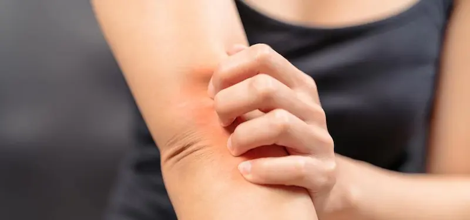

Ослабленный кожный барьер: потеря влаги и повышенная чувствительность — главные причины сухости, зуда и раздражения кожи, склонной к экземе.Что такое кожа, склонная к экземе?
Кожа, склонная к экземе, — это тип чувствительной кожи, у которой защитный барьер работает менее эффективно. Из-за этого кожа быстрее теряет влагу, становится сухой, раздражённой и может реагировать воспалением даже на обычные внешние факторы.
Экзема проявляется покраснением, шелушением и зудом. Иногда могут появляться небольшие трещины, участки воспаления или повышенная чувствительность к косметике и бытовой химии. В климате Молдовы состояние кожи часто ухудшается зимой из-за сухого воздуха, ветра и резких перепадов температуры между улицей и помещением.
Важно понимать, что кожа, склонная к экземе, требует особенно мягкого ухода. Неподходящие очищающие средства, агрессивные скрабы или продукты с большим количеством ароматизаторов могут усиливать раздражение и провоцировать обострения.
Почему возникает экзема: нарушение защитного барьера кожи
Главная причина появления экземы — ослабление защитного барьера кожи. В норме верхний слой эпидермиса удерживает влагу и защищает организм от бактерий, аллергенов и раздражающих веществ. Когда этот барьер повреждён, кожа начинает быстрее терять воду и становится более уязвимой к внешним факторам.
Среди наиболее частых причин обострений — сухой воздух, контакт с агрессивными моющими средствами, стресс, аллергические реакции и генетическая предрасположенность. У многих людей кожа также реагирует на синтетические ткани, жёсткую воду или косметику с высоким содержанием спирта и ароматизаторов.
В условиях городского климата Кишинёва ситуацию могут усугублять загрязнение воздуха и пыль. Эти факторы оседают на поверхности кожи, нарушают её баланс и усиливают воспалительные реакции, вызывая сухость, зуд и ощущение стянутости.

Основные правила ухода за кожей, склонной к экземе
Полезные ингредиенты для кожи, склонной к экземе
| Ингредиент | Действие для кожи с экземой |
|---|---|
| Пантенол (Провитамин B5) | Успокаивает раздражённую кожу, уменьшает покраснение и ускоряет восстановление повреждённого кожного барьера. |
| Церамиды | Восстанавливают липидный слой кожи и помогают удерживать влагу, снижая сухость и чувствительность кожи. |
| Коллоидная овсянка | Обладает выраженным успокаивающим действием, уменьшает зуд и воспаление, часто используется в средствах для чувствительной и атопической кожи. |
| Сквалан | Смягчает кожу, укрепляет её защитный барьер и помогает предотвратить потерю влаги. |

Ошибки, которые могут ухудшить состояние кожи при экземе
Как поддерживать здоровье кожи, склонной к экземе
Уход за кожей, склонной к экземе, должен быть направлен прежде всего на восстановление защитного барьера и поддержание оптимального уровня увлажнения. Правильно подобранные средства помогают уменьшить сухость, снизить зуд и сделать кожу менее чувствительной к внешним раздражителям.
Основу ухода составляют мягкое очищение, регулярное увлажнение и использование средств с успокаивающими ингредиентами. Кремы с церамидами, пантенолом, скваланом или коллоидной овсянкой помогают укрепить кожный барьер и снизить риск обострений. В условиях климата Молдовы особенно важно защищать кожу зимой от холодного ветра и сухого воздуха, а летом — от обезвоживания и солнечного воздействия.

Протокол ухода за кожей, склонной к экземе: Утро vs Вечер
Для минимизации воспалений и зуда важно разделить рутину на две фазы: увлажнение и защита днем и восстановление и успокоение вечером.
| Время суток | Этап ухода | Почему это важно? |
|---|---|---|
| Утро | Лёгкий увлажняющий крем + SPF 30–50 | Создает барьер от UV-лучей и внешних раздражителей, предотвращает обезвоживание. |
| Вечер | Крем с церамидами / пантенол | Восстанавливает защитный слой кожи, уменьшает воспаление и зуд после дня. |
| Уход (ежедневно) | Смягчающие средства, масла для экземной кожи | Поддерживают гидролипидный баланс и снижают раздражение. |
| SOS-уход | Успокаивающие маски / бальзамы с овсянкой | Интенсивное восстановление при обострении и повышенной чувствительности кожи. |
Совет для Молдовы: В условиях сухого воздуха зимой и жаркого лета летом особенно важно защищать кожу с экземой от пересушивания и ультрафиолета. Используйте кремы с физическими фильтрами (оксид цинка, диоксид титана), которые минимально раздражают кожу и обеспечивают стабильную защиту.
Влияние городской среды на кожу, склонную к экземе
В условиях Кишинева и других городов Молдовы сочетание пыли, смога и жесткого ультрафиолетового излучения повышает риск обострений. Частицы загрязнений оседают на коже и могут вызывать микровоспаления, усиливая сухость и раздражение.
Особое внимание стоит уделять вечернему очищению: мягкое гидрофильное масло или очищающий бальзам + успокаивающий крем с антиоксидантами помогут снизить воспаление, восстановить защитный барьер и уменьшить зуд.
Симптомы кожи, склонной к экземе
Факторы, провоцирующие обострение экземы
Основные принципы профилактики обострений
Для кожи с экземой важно соблюдать ежедневный и мягкий уход: увлажнение, защита от солнца и раздражителей, поддержание барьерных функций эпидермиса. Используйте гипоаллергенные средства без ароматизаторов и агрессивных кислот, отдавая предпочтение продуктам с церамидами, пантенолом, маслами овса или ши.
Также важно вести дневник обострений: отмечать факторы, вызывающие раздражение, и корректировать образ жизни и уход в соответствии с результатами наблюдений.